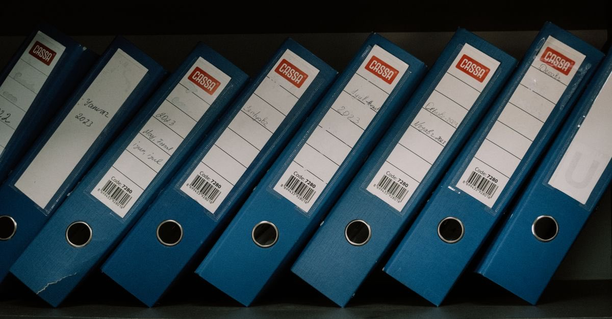

Deprem sonrası ilk günler
Cenaze bulunamadıysa ölüm nüfusa nasıl işlenir? Ölüm karinesi, gaiplik ve miras
Enkazda kaybolan kişi, cesedi bulunamasa bile ölmüş sayılabilir. Bu, mahkeme kararı gerektirmez ve mirası hemen açar. Gaiplikten farkı budur.
· ~4 dakika okuma · T8 Hasar Tespiti · Claude Impact Lab

Depremin en ağır sonuçlarından biri, kaybedilen kişinin cenazesine ulaşılamamasıdır. Yasın yanına bir de belirsizlik eklenir: nüfus kaydı kapanmaz, miras açılmaz, sigorta ödemesi yapılmaz, banka hesabına erişilemez, maaş bağlanmaz.
Oysa Türk hukukunda bu durumun karşılığı vardır ve neredeyse hiç bilinmez.
Ölüm karinesi: cenaze şart değil
"Bir kimse, ölümüne kesin gözle bakılmayı gerektiren durumlar içinde kaybolursa, cesedi bulunamamış olsa bile gerçekten ölmüş sayılır."
Yıkılan bir binanın altında kalıp cesedine ulaşılamayan kişi, bu hükmün tipik uygulama alanıdır. Burada mahkemeye gitmek gerekmez.
Nüfusa nasıl işlenir?
Müracaat edilen yerin mülkî idare amirinin emriyle ölüm tutanağı düzenlenir ve ölüm olayı nüfus kütüğüne işlenir. Başvuruyu altsoy, üstsoy ve kardeşler yapabilir; bunlar yoksa mirasçılar başvurabilir.
- Kaymakamlık veya valiliğe (mülkî idare amirliğine) başvurun.
- Kaybolan kişinin kimlik bilgilerini, olayın tarih ve yerini, binanın adresini bildirin.
- Elinizdeki her kanıtı ekleyin: enkazda arama kayıtları, tanık beyanları, son görüşme bilgileri, telefon konum kayıtları, hastane ve AFAD kayıtları.
- Ölüm tutanağı düzenlendikten sonra nüfus kaydı kapanır ve miras hemen açılır.
Gaiplikten farkı: en pratik bilgi
| Ölüm karinesi | Gaiplik | |
|---|---|---|
| Karar mercii | Mülkî idare amiri (idari) | Sulh hukuk mahkemesi |
| Süre şartı | Yok | Var, kanuni süreler beklenir |
| Miras | Hemen açılır | Karardan sonra, teminat şartlarıyla |
| Tipik hâl | Enkaz altında kaybolma | Uzun süre haber alınamama |
Aylarca "kayıp" statüsünde bekleyen aileler çoğu zaman gaiplik davası açmaları gerektiğini sanır ve süre beklemeye başlar. Oysa depremde ölümüne kesin gözle bakılan bir kayıp için ölüm karinesi yolu daha hızlıdır ve mahkeme gerektirmez.
Aynı enkazda birden fazla kişi öldüyse
Ölenlerden hangisinin önce öldüğü ispat edilemezse, hepsi aynı anda ölmüş sayılır. Bu kural, aynı binada ölen aile bireylerinin mirasında kimin kimden miras alacağını belirlediği için sonuçları çok büyüktür.
Ölüm hâlinde hangi ödemeler devreye girer?
Önce net bir cümle: DASK ölümü karşılamaz. Zorunlu deprem sigortası genel şartları, ölüm dâhil tüm bedeni zararları ve manevi tazminat taleplerini teminat dışında bırakır. Bedeni zararların karşılığı başka poliçelerdedir.
| Kaynak | İçerik |
|---|---|
| Hayat sigortası | Vefat teminatı ödenir. Ödeme için ölümün kayda geçmiş olması gerekir — ölüm karinesi tescili burada kritik hızlandırıcıdır. |
| Ferdi kaza sigortası | Aksi sözleşmeyle kararlaştırılmadıkça deprem teminat dışıdır. Poliçede deprem teminatı seçilmiş mi, kontrol edin. |
| SGK ölüm (dul-yetim) aylığı | 4/a kapsamında en az 5 yıl sigortalılık ve 900 prim günü koşuluyla hak sahiplerine bağlanır. Başvuru e-Devlet üzerinden yapılabilir. |
| Bireysel emeklilik (BES) | Birikim, devlet katkısı ve getirileri sözleşmedeki lehtara, yoksa yasal mirasçılara ödenir. Talepten itibaren 20 iş günü içinde, getiriler üzerinden stopaj kesilerek ödenir. |
Çoğu ailenin haberi olmayan birikim: BES
Aileler vefat eden yakınlarının bireysel emeklilik sözleşmesi olup olmadığını çoğu zaman bilmez. Bu bilgi e-Devlet üzerinden lehtar sorgulamasıyla öğrenilebilir.
Yakınını kaybeden herkesin yapması gereken üç sorgu: BES lehtar sorgulaması, hayat/ferdi kaza poliçesi kontrolü ve SGK hak sahipliği başvurusu. Üçü de e-Devlet üzerinden başlatılabilir ve üçü de talep edilmedikçe kendiliğinden ödenmez.
Miras işlemlerinde sıra
- Ölüm kaydının işlenmesi — ölüm karinesi yoluyla.
- Mirasçılık belgesi (veraset ilamı) — noterden veya sulh hukuk mahkemesinden.
- Mirasın kabulü veya reddi — murisin borçları varsa reddi miras süreleri işler; bu konuda mutlaka avukata danışın.
- Banka, tapu, sigorta ve SGK başvuruları.
Bina yıkıldıysa mülkiyet yok olmaz. Ana yapı tamamen yıkıldığında kat mülkiyeti sona erer ve geriye arsa payı oranında paylı mülkiyet kalır. Mirasla geçen şey budur — arsa payı ve yeniden inşa yazısı bunu anlatıyor.
Ceza davasında yakınların yeri
Binanın yıkılmasından sorumlu olanlara karşı yürütülen ceza yargılamasında ölenin yakınları katılan (müdahil) sıfatını alabilir. Ayrıca müteahhide, yapı denetim kuruluşuna ve idareye karşı tazminat davası açılabilir; bunun için ölen kişinin veya yakınlarının tapu sahibi olması gerekmez.
Ayrıntı: müteahhidin hukuki ve cezai sorumluluğu.
Mirasın borçları da geçer: reddi miras
Miras yalnızca mal varlığını değil, borçları da kapsar. Depremde vefat eden kişinin konut kredisi, ticari borcu veya kefaleti varsa, bunlar mirasçılara geçer.
Mirası reddetmek isteyen mirasçılar için kanunda süre öngörülmüştür ve bu süre, mirasçı olduğunuzu öğrendiğiniz andan itibaren işler. Süre kaçarsa miras, borçlarıyla birlikte kabul edilmiş sayılabilir. Murisin borç durumunu bilmiyorsanız vakit kaybetmeden bir avukata danışın; ücret ödeyemiyorsanız barosunun adli yardım birimine başvurun.
Afet hâllerinde borçlara ilişkin geçici kolaylıklar (erteleme, ödemesiz dönem) gündeme gelebilir; ancak bunlar dönemsel idari kararlardır ve kalıcı hak oluşturmaz. Kararınızı bu kolaylıklara göre değil, borcun gerçek büyüklüğüne göre verin.
Yakınını kaybedenler için kontrol listesi
- Ölüm kaydının işlenmesi (ölüm karinesi yoluyla, mülkî amirliğe başvuru)
- Mirasçılık belgesinin alınması
- Murisin borç durumunun araştırılması ve gerekiyorsa reddi miras
- Hayat ve ferdi kaza poliçelerinin kontrolü
- SGK ölüm aylığı başvurusu
- BES lehtar sorgulaması
- Banka hesapları, kiralık kasa ve tapu işlemleri
- Varsa tazminat ve ceza dosyalarında taraf olma
Sık sorulan sorular
Cesedi bulunamayan kişi ölmüş sayılır mı?
Evet. Bir kimse ölümüne kesin gözle bakılmayı gerektiren durumlar içinde kaybolursa, cesedi bulunamamış olsa bile gerçekten ölmüş sayılır. Yıkılan bina altında kalıp cesedine ulaşılamayan kişi bunun tipik örneğidir.
Ölüm karinesi ile gaiplik arasındaki fark nedir?
Ölüm karinesi idari bir kararla, mülkî idare amirinin emriyle nüfusa işlenir ve süre beklemeyi gerektirmez; miras hemen açılır. Gaiplik ise sulh hukuk mahkemesi kararı gerektirir ve kanunda öngörülen sürelerin geçmesini bekler.
Ölüm kaydı için nereye başvurulur?
Müracaat edilen yerin mülkî idare amirinin emriyle ölüm tutanağı düzenlenerek ölüm olayı nüfusa işlenir. Başvurabilecekler altsoy, üstsoy ve kardeşlerdir; bunlar yoksa mirasçılar başvurabilir.
Vefat edenin bireysel emeklilik birikimi nasıl öğrenilir?
Vefat edenin bireysel emeklilik sözleşmesi olup olmadığı e-Devlet üzerinden lehtar sorgulamasıyla öğrenilebilir. Birikim, sözleşmedeki lehtara, yoksa yasal mirasçılara ödenir.
Ferdi kaza sigortası depremde ödeme yapar mı?
Aksi sözleşmeyle kararlaştırılmadıkça deprem ferdi kaza poliçelerinde teminat dışıdır. Poliçede deprem teminatının seçilip seçilmediği mutlaka kontrol edilmelidir.
Hangi kanuna dayanıyor?
Bu yazıdaki bilgilerin dayandığı düzenlemeler:
- 4721 sayılı Türk Medeni Kanunu m.31 — ölüm karinesi
- 4721 sayılı Türk Medeni Kanunu m.32 vd. — gaiplik
- 4721 sayılı Türk Medeni Kanunu m.29 — birlikte ölüm karinesi
- 5490 sayılı Nüfus Hizmetleri Kanunu m.32 — ölüm tutanağının düzenlenmesi
- Bireysel emeklilik mevzuatı — lehtara ve mirasçılara ödeme
- Haklarım — durumunuza uyan hakları dayanağıyla listeleyin
- Süre takvimi — sigorta ve başvuru sürelerinizi takip edin